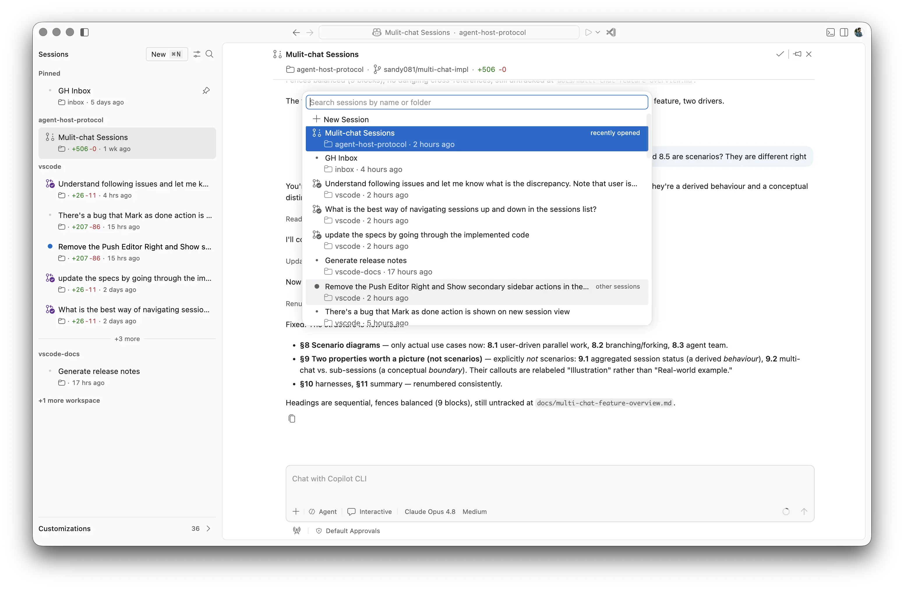
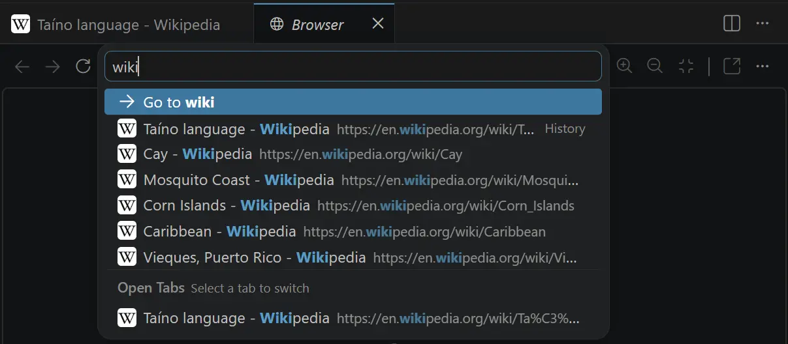
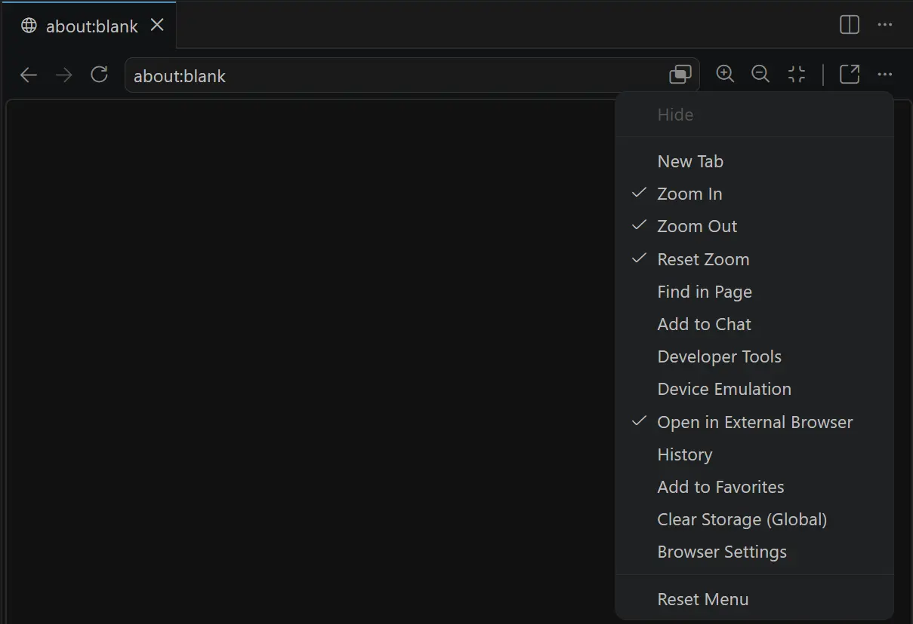
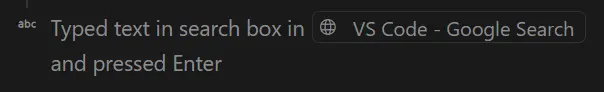

Visual Studio Code 1.124
_发布日期: 2026年6月10日_
更新 1.124.1: 此更新解决了这些问题。
更新 1.124.2: 此更新解决了这些问题。
欢迎来到 Visual Studio Code 1.124 版本。此版本使跨代理会话的工作更加快速，并赋予代理更多自主权来完成您的任务。
- Autopilot: Autopilot 现已默认启用，并且更智能地判断任务何时真正完成。
- 后台会话: 在后台快速发送请求，同时继续构思下一个会话。
- 会话导航: 使用键盘搜索、跳转和逐步浏览代理会话。
- 浏览器历史记录: 重新访问和搜索您已在集成浏览器中打开过的页面。
祝编码愉快！
Agents 窗口（预览版）
Agents 窗口是一个专用的配套窗口，专为在项目和机器之间探索、迭代和审查代理会话而优化。此版本的重点是加快在会话之间切换的速度，并在重新加载时保留您的上下文。
新会话的后台发送
以前，开始新会话意味着必须等待它加载完成后才能构思下一个。现在，您可以在后台发送请求：在新会话视图中按 kbstyle(Alt+Enter)（或按住 kbstyle(Alt) 并选择发送）。
视图会立即重置并保留其状态（例如所选模型和上下文），仅清除查询文本，因此您可以继续排队发送请求。每个已启动的会话在提交后会出现在会话列表中。
使用 kbstyle(Enter) 发送提示词仍然会像之前一样导航到新会话中。
在会话之间导航
当您在多个代理会话之间工作时，能够快速查找和切换会话至关重要。此版本添加了几种通过键盘驱动的会话浏览方式，从可搜索的选择器到前后导航以及按位置直接跳转。
- 会话选择器: 按
kbstyle(Ctrl+R)（macOS 上为kbstyle(Cmd+R)）打开快速选择器，该选择器将会话分为两组列出——最近打开的和其他会话，并预选当前活动会话。可以跨会话标题及其文件夹进行搜索，然后:- 按
kbstyle(Enter)打开所选会话。 - 按
kbstyle(Cmd/Ctrl+Enter)在侧边打开它。 - 按
kbstyle(Right Arrow)在后台打开它，同时保持选择器打开。
- 按

- 后退和前进: 按
kbstyle(Ctrl+Tab)后退，按kbstyle(Ctrl+Shift+Tab)前进，按最近访问顺序浏览您已访问过的会话。 - 上一个和下一个会话: 转到上一个会话和转到下一个会话命令按显示顺序逐步浏览可见会话列表，遵循分组、筛选和折叠的部分，并在列表边缘停止。使用
kbstyle(Alt+Up)/kbstyle(Alt+Down)（或kbstyle(Ctrl+PageUp)/kbstyle(Ctrl+PageDown)；macOS 上为kbstyle(Cmd+Alt+Left)/kbstyle(Cmd+Alt+Right)）。
- 按位置聚焦会话: 按
kbstyle(Ctrl+1)到kbstyle(Ctrl+9)（macOS 上为kbstyle(Cmd+1)到kbstyle(Cmd+9)）聚焦网格中从左到右的第 N 个可见会话。
重新加载时恢复会话
重新加载或重新打开 Agents 窗口不再丢失您的布局。之前的可见会话及其状态将自动恢复，让您回到离开时的位置。这包括:
- 可见会话网格: 哪些会话已打开、它们的从左到右顺序、活动会话以及任何已置顶或固定的会话。
- 每个会话的布局，包括辅助侧边栏可见性、活动视图容器以及每个会话中已打开的编辑器。
- 会话列表状态，包括每个会话的固定和已读状态。
关闭所有会话
类似于编辑器的全部关闭...命令，您现在可以使用新的关闭所有会话命令一步关闭所有会话。当您打开了许多会话并希望快速切换到新会话而无需逐个关闭时，这尤其有用。
在会话获得焦点时使用键盘快捷键 kbstyle(Ctrl+K Ctrl+W)（macOS 上为 kbstyle(Cmd+K Cmd+W)），或从命令面板访问该命令。
变更视图中的单文件对比（预览版）
设置: setting(sessions.changes.openSingleFileDiff)
默认情况下，在变更视图中选择文件会打开多文件对比编辑器。要仅打开该文件的变更，您之前需要按 kbstyle(Alt) 并选择文件（打开变更）。
要始终在选择变更视图中的文件时打开聚焦的单文件对比编辑器，请启用 setting(sessions.changes.openSingleFileDiff)。这使您可以一次专注于一项变更，而不会受到多文件对比中其他文件的干扰。启用该设置后，冗余的打开变更内联操作将被隐藏。
使用侧边栏箭头扩展编辑器
当您在 Agents 窗口中打开文件时，编辑器标题栏中的标签右侧会显示一个箭头开关。选择它可以折叠辅助侧边栏（auxiliary bar）并扩展编辑器，再次选择它可以恢复侧边栏。箭头方向反映当前侧边栏的可见性。
Autopilot（预览版）
Autopilot 是聊天权限级别之一，允许代理主动行事、自主工作，无需对每个操作都要求显式用户批准。
Autopilot 默认已启用
设置: setting(chat.permissions.default)、setting(chat.tools.global.autoApprove)
Autopilot 现在在 VS Code 中默认启用。组织仍可以通过 setting(chat.tools.global.autoApprove) 设置来控制 Autopilot 的可见性和使用。
您可以使用 setting(chat.permissions.default) 配置新聊天的默认权限级别。随时可以在聊天输入框中更改当前的权限级别。
Advanced Autopilot
设置: setting(chat.autopilot.advanced.enabled)
判断代理何时真正完成任务是困难的。过早停止则工作不完整，循环过久则浪费时间和令牌。Advanced Autopilot 改变了 Autopilot（预览版）在决定何时继续迭代以及何时完成时的判断方式，使您获得更完整的结果，而无需手动监控循环。
与其依赖固定规则，一个小型实用模型会读取聊天记录并判断任务是否完成。Autopilot 致力于达成的目标会显示在聊天上方的工具提示中，因此您可以随时看到它正在尝试完成什么。为保持范围可控，Autopilot 最多循环三次后停止。
将 setting(chat.autopilot.advanced.enabled) 设置为 true 即可试用此功能。
编辑器体验
从简单文件对话框打开文件夹时创建文件夹
当您从简单文件对话框（setting(files.simpleDialog.enable:true)）打开文件夹时，现在可以直接在对话框中输入要创建的文件夹名称并按 kbstyle(Enter) 或选择确定来创建新文件夹。
集成浏览器
历史记录
设置: setting(workbench.browser.maxHistoryEntries)
集成浏览器现在会保留已访问页面的历史记录。在 URL 栏中输入时，历史记录项会作为建议显示，并且可以通过浏览器标签页中的 kb(workbench.action.browser.showHistory) 进行管理。可通过 setting(workbench.browser.maxHistoryEntries) 调整要记住的最大历史记录条目数。

改进的工具栏可自定义性
以前，将元素添加到聊天和切换开发者工具是仅有的可以持久显示在浏览器工具栏右侧的操作。
现在，所有出现在溢出菜单中的操作也可以通过右键单击 URL 输入右侧的工具栏区域来持久显示:

更快的代理文本输入
以前，输入文本并按 kbstyle(Enter) 需要两次单独的工具调用。现在，typeInPage 工具支持 submit 参数，允许代理在一次工具调用中输入文本并按 Enter。
这减少了常见文本输入场景的往返次数。

企业版
企业管理 Copilot 插件策略（实验性）
VS Code 现在从已驱动 Copilot CLI 企业插件标准的同一个配置文件中读取策略，因此单一策略定义同时适用于两个客户端。未来，VS Code 和 CLI 将在基于此共享源的策略管理上进一步对齐。
企业管理员现在可以集中控制哪些聊天插件和插件市场可供开发者使用，而无需要求每个开发者进行本地配置。
在 1.123 中引入，三个新的策略支持的设置可以通过 Copilot 企业设置文件或现有的 MDM 解决方案进行配置:
setting(chat.plugins.enabledPlugins): 组织显式启用或禁用的插件 ID 允许列表。setting(chat.plugins.extraMarketplaces): 组织希望提供的额外插件市场。setting(chat.plugins.strictMarketplaces): 启用后，仅信任由策略提供的市场。
被策略阻止的插件仍然可见，但显示为禁用状态。由策略管理的市场会在市场选择器中标记。
已弃用的功能和设置
无
致谢
对我们的问题跟踪做出贡献的人员:
- @gjsjohnmurray (John Murray)
- @RedCMD (RedCMD)
- @IllusionMH (Andrii Dieiev)
- @albertosantini (Alberto Santini)
对 vscode 做出贡献的人员:
- @1Burhanuddin (Burhanuddin Mundrawala): 修复: 更正 parcelWatcher.ts 注释中的拼写错误 occured -> occurred PR #319721
- @ajasad25 (Asad Meeran): 修复问题报告器"在 GitHub 上预览"打开仓库根目录而不是新建问题表单的问题 PR #319577
- @gjsjohnmurray (John Murray)
- 改进扩展更新后的重启/重新加载消息（修复 #297278）PR #307353
- 恢复快速选择器中符号图标的颜色（修复 #299650）PR #299753
- @guomaggie: 从 Copilot Proxy 切换到 CAPI PR #318443
- @ishaq2321 (Muhammad Ishaq Khan)
- 调试: 记录加载已存储断点/监视表达式时的错误（#319805）PR #319806
- 编辑器: 缓存 shadowCaretRangeFromPoint 中 getComputedStyle 的结果（#319803）PR #319804
- @KirtiRamchandani (Kirtikumar Anandrao Ramchandani): 修复: 显示缺失的 Git LFS git 错误 PR #319973
- @maruthang (Maruthan G): 修复(资源管理器): 保护文件资源管理器滚动处理程序免受瞬时树映射不同步的影响（#188365）PR #310833
- @mohanrajvenkatesan23-04 (Mohanraj Venkatesan): html-language-features: 在 \
- @mohityadav8 (Mohit Yadav): 修复(文档): 更正文档中的语法和拼写问题 PR #317718
- @mutl3y: 修复(终端): 在 VS Code web 中 file:// 提供程序不存在时捕获 getCwdResource 中的 ENOPRO PR #317780
- @sgoedecke (Sean Goedecke): 修复空模型提供程序的自动模式回退 PR #316174
- @SimonSiefke (Simon Siefke)
- 修复: extensionHostConnection 中的进程泄漏 PR #319223
- 修复: 窗格复合栏中的内存泄漏 PR #282589
- 修复: pty host 服务中的内存泄漏 PR #287025
- @tbogoodnews (Taylor Blair): 修复 BYOK 响应成功转向遥测 PR #319637
- @vivekjm (Vivek JM): 在没有符号时禁用复制面包屑路径 PR #318042
- @yogeshwaran-c (Yogeshwaran C): 从 Tab 键顺序中移除禁用的切换开关 PR #319693
对 vscode-extension-samples 做出贡献的人员:
- @fhwvtqdc2q-svg (Lloouujjiinn): 替换已弃用的 typescript.tsc.autoDetect 设置 PR #1287
对 vscode-pull-request-github 做出贡献的人员:
- @Malix-Labs (Malix - Alix Brunet): 功能:
contributes.yamlValidationPR #8761
我们非常感谢大家在新功能就绪后立即尝试使用，请经常回来查看并了解新内容。
>如果您想阅读以前 VS Code 版本的发行说明，请访问 code.visualstudio.com 上的更新页面。